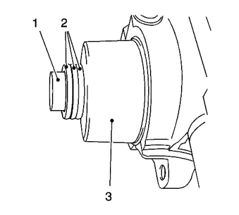

- Monte los anillos de junta de los árboles de levas nuevos.

Nota: Cubra con pasta deslizante MoS 2. Consultar Adhesivos, líquidos, lubricantes y selladores .
- Monte el árbol de levas de admisión (1).
Nota: Observe la marca de identificación en la tapa de cojinete del árbol de levas.
- Monte las 4 tapas de cojinete del árbol de levas de admisión con el número 2-5.
Precaución:Consulte Precaución con las fijaciones en la sección Prólogo.
- Monte los 8 tornillos de la tapa del cojinete del árbol de levas de admisión y apriételos en espiral del interior al exterior a 8 N·m (71 lib. pulg.).

Nota: Cubra con pasta deslizante MoS 2. Consultar Adhesivos, líquidos, lubricantes y selladores .
- Monte el árbol de levas de escape (1).
Nota: Observe la marca de identificación en la tapa de cojinete del árbol de levas.
- Monte las 4 tapas de cojinete del árbol de levas de escape con el número 6-9.
- Monte los 8 tornillos de la tapa del cojinete del árbol de levas de escape y apriételos en espiral del interior al exterior a 8 N·m (71 lib. pulg.).
Nota: Las superficies de sellado deben estar libres de aceite y grasa.
- Limpie las superficies del primer soporte de cojinete del árbol de levas y de la culata con una herramienta adecuada.
Limpie el conducto de aceite de cualquier residuo de sellador.
Nota:
| • | Es esencial asegurarse de que no se aplique sellador fuera de las áreas de sellado marcadas. |
| • | Las ranuras adyacentes a las superficies de sellado deben permanecer libres de sellador. |
Nota: Las superficies de sellado deben estar libres de aceite y grasa.
- Aplique una capa fina y uniforme de sellador de superficies a las superficies de sellado del primer sombrerete de cojinete del árbol de levas.
- Coloque el primer sombrerete de cojinete de los árboles de levas en el bloque motor y apriete los tornillos a unos 2 N·m (18 lib. pulg.).

Nota: No puede entrar sellador en los árboles de levas.
- Monte el primer sombrerete de cojinete de árbol de levas.
Nota: Observe el orden de montaje 1-4.
- Monte el primer sombrerete de cojinete del árbol de levas y los tornillos y apriételos a 8 N·m (71 lib. pulg.).

- Monte 2 anillos de junta nuevos en los árboles de leva.
- Apriete el anillo de junta con la herramienta de montaje EN-422 (3) en el árbol de levas hasta que toque la culata.
- Para el montaje, utilice el tornillo del piñón del árbol de levas (1) con suplementos (2) con un grosor total de aproximadamente 10 mm.
- Extraiga la herramienta de montaje EN-422 (3).